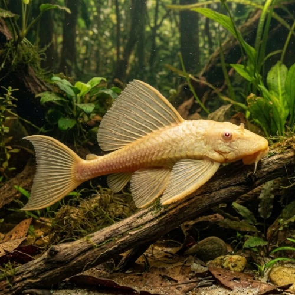

Nome popular principal
Cascudo Albino
Cascudo Albino, Ancistrus Albino, Cascudo-Anão-Albino, Albino Bristlenose Pleco
Ficha de peixe
Cascudos e Limpa-Fundos
Um eficiente comedor de algas e limpador de fundo de porte compacto, perfeito para aquários comunitários e plantados.

Nome popular principal
Cascudo Albino, Ancistrus Albino, Cascudo-Anão-Albino, Albino Bristlenose Pleco
Nome científico
Nome técnico essencial para taxonomia, cruzamento de manejo e referência editorial consistente.
Dificuldade de manejo
Use este nível como referência inicial, sempre considerando volume, estabilidade e compatibilidade do aquário.
Seção 1
Seção 2
Seções 4 a 6
Cascudo Albino tem hábito alimentar herbívoro. Excelente. 1 a 2 vezes ao dia (preferencialmente no final do dia). Alimenta-se de algas, rações afundantes de spirulina e aceita muito bem rodelas de vegetais como abobrinha, pepino e chuchu levemente aferventados.
Machos adultos desenvolvem tentáculos ramificados proeminentes no focinho; fêmeas têm o focinho liso ou com pequenas cerdas curtas nas bordas. Tipo de reprodução: Ovíparo. Dificuldade de reprodução: Fácil. A desova ocorre no interior de cavernas ou tubos, onde o macho cuida dos ovos e oxigena a ninhada até os filhotes nadarem livremente.
Alta. Substrato recomendado: Areia fina de rio ou cascalho rolado macio com troncos e cavernas. Necessidade de esconderijos: Alta. A presença de troncos no aquário é altamente recomendada para fornecer fibras de madeira essenciais ao seu trato digestivo.
Seção 7
Por ser uma variedade albinótica, seus olhos avermelhados e tom amarelo-marfim se destacam bastante sobre substratos e cenários escuros.
Seção 8
Não, o Ancistrus Albino é uma espécie anã que atinge no máximo entre 10 e 15 cm de comprimento quando adulto.
Os machos adultos desenvolvem cerdas tentaculares bem marcadas e ramificadas ao longo do focinho, enquanto as fêmeas têm o focinho liso.
Sim, a raspagem de troncos fornece lignina e fibras vegetais indispensáveis para a boa digestão do peixe.